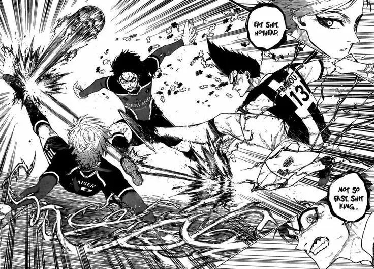

Blue Lock supera los 65 millones de copias
14 de noviembre de 2026
El popular manga de fútbol Blue Lock ha superado los 65 millones de copias en circulación. Esta cifra demuestra el gran éxito que tiene la obra de Muneyuki Kaneshiro y Yusuke Nomura.
La historia se centra en un proyecto diseñado para encontrar al mejor delantero de Japón.